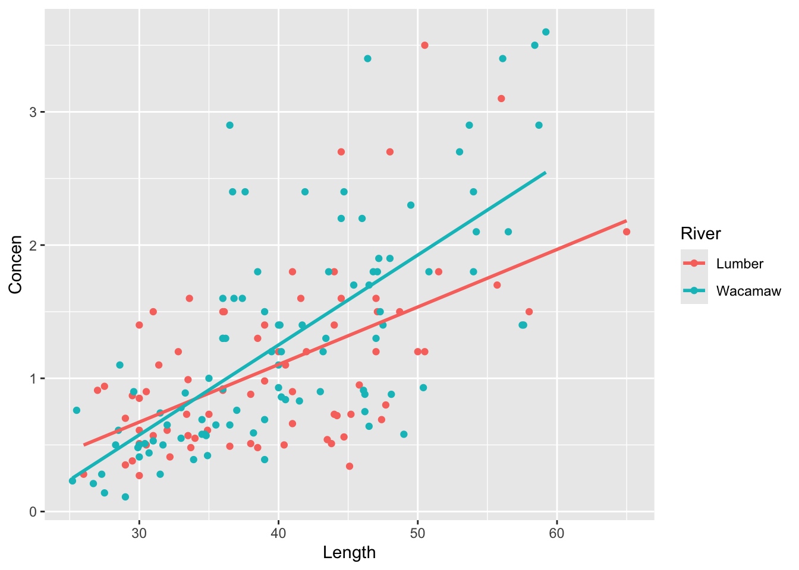

Research Question: Can we predict whether or not a mushroom is poisonous based on the shape of its cap?
For this exercise, we will look at data from various species of gilled mushrooms in the Agaricus and Lepiota Family. We have information on whether a mushroom is poisonous (TRUE if it is, FALSE if it’s edible), the shape of its cap (cap_shape, a categorical variable with 6 categories), the texture of its cap surface (cap_surface, a categorical variable with 4 categories), and the size of its gills (gill_size, a categorical variable with two categories)
# Load the data & packageslibrary(tidyverse)library(readr)library(broom)mushrooms <-read_csv("https://mac-stat.github.io/data/mushrooms.csv")mushrooms <- mushrooms %>%mutate(cap_shape =relevel(as.factor(cap_shape), ref="flat")) %>% dplyr::select(poisonous, cap_shape)head(mushrooms)
One of the most poisonous species of mushrooms is the Amanita phalloides or “Death Cap” mushroom, which typically has a flat cap shape when mature. Based on this anecdote, we hypothesize that species of mushrooms with flat caps in general may be more likely to be poisonous than edible.
First, let’s translate this question to an appropriate null and alternative hypothesis that we can compare with a formal hypothesis test. Remember that poisonous is a binary outcome, so we need to frame our null and alternative hypotheses in terms of odds (i.e., Odds(poisionous | flat cap) = P(poisonous|flat cap)/P(edible | flat cap)).
Your answer
Part b
Fit a logistic regression model to investigate whether cap_shape is associated with a mushroom being poisonous. (Note that in the setup code above, we have forced the reference category for the cap_shape predictor to be flat; without this, the reference category by default would be set as bell, which is the first category when sorted alphabetically).
mushroom_mod1 <-coef(mushroom_mod1)
Part c
Provide an appropriate interpretation of the intercept coefficient on the odds scale. Based on this interpretation, do you believe mushrooms with flat caps are more likely to be poisonous, or more likely to be edible?
Your answer here
Part d
Let’s look at the full model summary:
summary(mushroom_mod1)
Report and interpret the test statistic for the intercept term (our coefficient of interest):
Your answer
Part e
Report and interpret the p-value for the intercept term.
Based on this p-value and a significance level of 0.05, do we have evidence that mushrooms with flat caps are more likely to be poisonous than edible?
Your answer
Part f
Now suppose we are interested in whether the odds of being poisonous are different for mushrooms with other cap shapes.
By hand, calculate the odds of being poisonous for mushrooms with knobbed caps, conical caps, and sunken caps (remember that the non-exponentiated coefficients represent a difference in log-odds compared to the reference category):
odds(poisonous | knobbed cap) =
odds(poisonous | conical cap) =
odds(poisonous | sunken cap) =
Part g
Based on these odds, which of the 4 mushroom cap shapes we’ve investigated (flat, knobbed, conical, and sunken) do you believe is the best indicator that it’s edible? Which cap shape do you expect is most likely to be poisonous?
Now report and interpret the p-values for the coefficients corresponding to cap_shapeknobbed, cap_shapeconical, and cap_shapesunken:
Your answer
Part i
Based on the model summary output in part h above, if you were given a plate of mushrooms with different cap shapes and had to pick one to eat, which one would you choose? Which cap shape would you absolutely avoid at all costs? Are your decisions guided by the coefficient estimates, the p-values, or both?
Your answer
Part j
Let’s look at the data a slightly different way, using a 6x2 table of counts:
Now, if you were given a plate of mushrooms with different cap shapes and had to pick one shape to eat and one to absolutely avoid, would you choose the same shapes? Why or why not?
Your answer
Exercise 2
For this exercise, let’s return to the fish dataset from the previous activity (Activity 22).
fish <-read_csv("https://mac-stat.github.io/data/Mercury.csv")
Rows: 171 Columns: 5
── Column specification ────────────────────────────────────────────────────────
Delimiter: ","
chr (1): River
dbl (4): Station, Length, Weight, Concen
ℹ Use `spec()` to retrieve the full column specification for this data.
ℹ Specify the column types or set `show_col_types = FALSE` to quiet this message.
Research question: We believe the length of a fish (measured in centimeters) is causally associated with its mercury concentration (measured in parts per million [ppm]). We suspect that the river a fish is sampled from may be a confounder, since differences in the river environment may causally influence both the average length of fish (e.g. due to differences in water temperature or food availability) as well as mercury concentration (e.g. due to differences between the two rivers in mercury pollution levels).
Part a
Fit a linear regression model that can be used to answer our research question.
mod_fish1 <- ___summary(mod_fish1)
Part b
State the null and alternative hypotheses that we should use to test whether RiverWacamaw is associated with a difference in mercury concentration.
Response
Part c
Interpret the coefficient estimate, test statistic, and p-value for the RiverWacamaw coefficient. Assume we have specified a significance level of 0.05. In your interpretation, state whether you do or do not find evidence that RiverWacamaw confounds the relationship between fish length and mercury concentration.
Response
Part d
Suppose we now want to determine if the causal effect of fish length on mercury concentration differs according to the river a fish was sampled from.
First, modify the code chunk below to visualize the 3-way relationship between the Concen, Length, and River variables.
fish %>%ggplot(aes(x = ___, y = ___, colour = ___)) +# [ADDITIONAL GGPLOT LAYER(S)]
Next, fit an appropriate linear regression model with an interaction term to investigate this question.
mod_fish2 <- ___summary(mod_fish2)
Part e
Interpret the coefficient estimate, test statistic, and p-value for the RiverWacamaw:Length interaction term in this revised model (mod_fish2). Assume we’ve set a significance level of 0.05. Do we have evidence that River modifies the relationship between Length and Concen?
Response
Solutions
Exercise 1
Part a
One of the most poisonous species of mushrooms is the Amanita phalloides or “Death Cap” mushroom, which typically has a flat cap shape when mature. Based on this anecdote, we hypothesize that species of mushrooms with flat caps in general may be more likely to be poisonous than edible.
First, let’s translate this question to an appropriate null and alternative hypothesis that we can compare with a formal hypothesis test. Remember that poisonous is a binary outcome, so we need to frame our null and alternative hypotheses in terms of odds (i.e., Odds(poisonous | flat cap) = P(poisonous|flat cap)/P(edible | flat cap)).
\(H_0\): Odds(poisonous | flat cap) = 1
\(H_a\): Odds(poisonous | flat cap) ≠ 1
Part b
Fit a logistic regression model to investigate whether cap_shape is associated with a mushroom being poisonous. (Note that in the setup code chunk above, we have forced the reference category for the cap_shape predictor to be flat; otherwise, the reference category by default would be set as bell, which is the first category when sorted alphabetically).
Provide an appropriate interpretation of the intercept coefficient on the odds scale. Based on this interpretation, do you believe mushrooms with flat caps are more likely to be poisonous, or more likely to be edible?
The odds of a flat-capped mushroom being poisonous are 0.975:1–that is, mushrooms with flat caps are very slightly less likely to be poisonous than they are edible.
Part d
Let’s look at the full model summary:
summary(mushroom_mod1)
Call:
glm(formula = poisonous ~ cap_shape, family = "binomial", data = mushrooms)
Coefficients:
Estimate Std. Error z value Pr(>|z|)
(Intercept) -0.02538 0.03563 -0.712 0.4762
cap_shapebell -2.10483 0.15677 -13.426 <2e-16 ***
cap_shapeconical 14.59145 441.37169 0.033 0.9736
cap_shapeconvex -0.10610 0.04866 -2.180 0.0292 *
cap_shapeknobbed 0.99297 0.08557 11.604 <2e-16 ***
cap_shapesunken -14.54069 156.04846 -0.093 0.9258
---
Signif. codes: 0 '***' 0.001 '**' 0.01 '*' 0.05 '.' 0.1 ' ' 1
(Dispersion parameter for binomial family taken to be 1)
Null deviance: 11252 on 8123 degrees of freedom
Residual deviance: 10702 on 8118 degrees of freedom
AIC: 10714
Number of Fisher Scoring iterations: 13
Report and interpret the test statistic for the intercept term (our coefficient of interest):
The test statistic is -0.712—this means that the coefficient estimate of interest is 0.712 standard errors away from (specifically, below) the null value of 0 (note that this is on the log-odds scale).
Part e
Report and interpret the p-value for the intercept term.
Based on this p-value and a significance level of 0.05, do we have evidence that mushrooms with flat caps are more likely to be poisonous than edible?
The p-value for the intercept term is 0.4762.
Interpretation: If the null hypothesis were true (i.e., the odds of being poisonous were 1), the probability of seeing a test statistic as or more extreme than |-0.712| is 0.4762. Because the p-value is greater than our significance level of 0.05, we have no evidence to suggest that a flat-capped mushroom is more or less likely to be poisonous.
Part f
Now suppose we are interested in whether the odds of being poisonous are different for mushrooms with other cap shapes.
Calculate the odds of being poisonous for mushrooms with knobbed caps, conical caps, and sunken caps (remember that the non-exponentiated coefficients represent a difference in log-odds compared to the reference category):
# knobbedexp(-0.025+0.992)
[1] 2.630042
#conicalexp(-0.025+14.59)
[1] 2115919
#sunkenexp(-0.025-14.54)
[1] 4.726078e-07
Part g
Based on these odds, which of the 4 mushroom cap shapes we’ve investigated (flat, knobbed, conical, and sunken) do you believe is the best indicator that it’s edible? Which cap shape do you expect is most likely to be poisonous?
Using only the coefficient estimates, it appears that mushrooms with a sunken cap shape appear to be most likely to be edible, as the odds they are poisonous are approximately \(4.7 \times 10^{-7}\) to 1. Mushrooms with conical caps appear to be most likely to be poisonous (odds of being poisonous are >2 million to 1).
Now report and interpret the p-values for the coefficients corresponding to cap_shapeknobbed, cap_shapeconical, and cap_shapesunken:
cap_shapeknobbed: Our null hypothesis is that the odds ratio between flat-capped and knob-capped mushrooms is 1 (i.e., the odds of a knob-capped mushroom being poisonous are equal to the odds of a flat-capped mushroom being poisonous). If we assume the null hypothesis is true, then the probability of seeing a test statistic as or more extreme than |11.60| is 3.91e-31. Because the p-value is far below our significance level of 0.05, we take this as strong evidence that knob-capped mushrooms are much more likely to be poisonous than flat-capped mushrooms.
cap_shapeconical: Our null hypothesis is that the odds ratio between flat-capped and cone-capped mushrooms is 1 (i.e., the odds of a cone-capped mushroom being poisonous are equal to the odds of a flat-capped mushroom being poisonous). If we assume the null hypothesis is true, then the probability of seeing a test statistic as or more extreme than |0.03| is 0.974 (i.e., we are very likely to see a test statistic more extreme than |-0.03| if in fact there were no difference between flat-capped and cone-cap mushrooms in odds of being poisonous). Because the p-value is far above our significance level of 0.05, we do not have evidence that the odds of a cone-capped mushroom being poisonous differ from the odds of a flat-capped mushroom being poisonous.
cap_shapesunken: Our null hypothesis is that the odds ratio between flat-capped and sunken-cap mushrooms is 1 (i.e., the odds of a sunken-cap mushroom being poisonous are equal to the odds of a flat-capped mushroom being poisonous). If we assume the null hypothesis is true, then the probability of seeing a test statistic as or more extreme than |-0.09| is 0.926 (i.e., we are very likely to see a test statistic more extreme than |-0.09| if in fact there were no difference between flat-capped and sunken-cap mushrooms in odds of being poisonous). Because the p-value is far above our significance level of 0.05, we do not have evidence that the odds of a sunken-capped mushroom being poisonous differ from the odds of a flat-capped mushroom being poisonous.
Part i
Based on the model summary output in part h above, if you were given a plate of mushrooms with different cap shapes and had to pick one to eat, which one would you choose? Which cap shape would you absolutely avoid at all costs? Are your decisions guided by the coefficient estimates, the p-values, or both?
Answers may vary–if only considering coefficient estimates, then cone-shaped caps are most likely to be poisonous and sunken-shaped caps are most likely to be edible. But if we only look at p-values, then knob-shaped caps have the strongest evidence that they are more likely to be poisonous, and bell-shaped caps have the strongest evidence that they are more likely to be edible.
Part j
Let’s look at the data a slightly different way, using a 6x2 table of counts:
Now, if you were given a plate of mushrooms with different cap shapes and had to pick one shape to eat and one to absolutely avoid, would you choose the same shapes? Why or why not?
Personally, I’d stick with the sunken-shaped caps for eating. Even though our model suggests there’s no evidence to believe they are less likely to be poisonous, 0 out of 32 in the sample are poisonous, which seems like the least risky choice. However, I’d tend to avoid the knob-capped mushrooms more than the cone-capped mushrooms—even though the latter are all poisonous in the sample, there were only 4 observations, so it’s possible that due to sampling variation, the odds of being poisonous for cone-capped mushrooms is lower than that of knob-capped mushrooms (where we have many more observations).
Exercise 2
For this exercise, let’s return to the fish dataset from the previous activity (Activity 22).
fish <-read_csv("https://Mac-STAT.github.io/data/Mercury.csv")
Rows: 171 Columns: 5
── Column specification ────────────────────────────────────────────────────────
Delimiter: ","
chr (1): River
dbl (4): Station, Length, Weight, Concen
ℹ Use `spec()` to retrieve the full column specification for this data.
ℹ Specify the column types or set `show_col_types = FALSE` to quiet this message.
Research question: We believe the length of a fish (measured in centimeters) is causally associated with its mercury concentration (measured in parts per million [ppm]). We suspect that the river a fish is sampled from may be a confounder, since differences in the river environment may causally influence both the average length of fish (e.g. due to differences in water temperature or food availability) as well as mercury concentration (e.g. due to differences between the two rivers in mercury pollution levels).
Part a
Fit a linear regression model that can be used to answer our research question.
mod_fish1 <-lm(Concen ~ Length + River, data=fish)summary(mod_fish1)
Call:
lm(formula = Concen ~ Length + River, data = fish)
Residuals:
Min 1Q Median 3Q Max
-1.19298 -0.36849 -0.07677 0.30905 1.84773
Coefficients:
Estimate Std. Error t value Pr(>|t|)
(Intercept) -1.194229 0.216287 -5.521 1.26e-07 ***
Length 0.057657 0.005213 11.061 < 2e-16 ***
RiverWacamaw 0.142027 0.089496 1.587 0.114
---
Signif. codes: 0 '***' 0.001 '**' 0.01 '*' 0.05 '.' 0.1 ' ' 1
Residual standard error: 0.5779 on 168 degrees of freedom
Multiple R-squared: 0.431, Adjusted R-squared: 0.4243
F-statistic: 63.63 on 2 and 168 DF, p-value: < 2.2e-16
Part b
State the null and alternative hypotheses that we should use to test whether RiverWacamaw is associated with a difference in mercury concentration.
\(H_0: \beta_2 = 0\)
\(H_a: \beta_2 \neq 0\)
Part c
Interpret the coefficient estimate, test statistic, and p-value for the RiverWacamaw coefficient. Assume we have specified a significance level of 0.05. In your interpretation, state whether you do or do not find evidence that RiverWacamaw confounds the relationship between fish length and mercury concentration.
coefficient: Holding fish length constant, we estimate the average mercury concentration among fish in the Wacamaw River to be 0.14ppm higher than fish in the Lumber River.
Test statistic: The estimate we observe (0.14) is 1.587 standard errors higher than the null value of a 0ppm difference in mercury concentration.
p-value: Assuming the null hypothesis is true and there is no actual difference in mercury concentration among the two fish populations (adjusting for fish length), the probability of observing a test statistic as or more extreme than |1.587| is 0.114. Because 0.114 > 0.05, we do not have sufficient evidence to reject the null hypothesis, and conclude that the average mercury concentration does not differ between the two rivers.
Part d
Suppose we now want to determine if the causal effect of fish length on mercury concentration differs according to the river a fish was sampled from.
First, modify the code chunk below to visualize the 3-way relationship between the Concen, Length, and River variables.
fish %>%ggplot(aes(x = Length, y = Concen, colour = River)) +geom_point()+geom_smooth(method="lm", se=F)
`geom_smooth()` using formula = 'y ~ x'

Next, fit an appropriate linear regression model with an interaction term to investigate this question.
mod_fish2 <-lm(Concen ~ Length * River, data=fish)summary(mod_fish2)
Call:
lm(formula = Concen ~ Length * River, data = fish)
Residuals:
Min 1Q Median 3Q Max
-1.27784 -0.35402 -0.08314 0.30650 1.94304
Coefficients:
Estimate Std. Error t value Pr(>|t|)
(Intercept) -0.623875 0.325576 -1.916 0.0570 .
Length 0.043185 0.008085 5.341 2.99e-07 ***
RiverWacamaw -0.826291 0.426529 -1.937 0.0544 .
Length:RiverWacamaw 0.024326 0.010483 2.321 0.0215 *
---
Signif. codes: 0 '***' 0.001 '**' 0.01 '*' 0.05 '.' 0.1 ' ' 1
Residual standard error: 0.5705 on 167 degrees of freedom
Multiple R-squared: 0.4488, Adjusted R-squared: 0.4389
F-statistic: 45.33 on 3 and 167 DF, p-value: < 2.2e-16
Part e
Interpret the coefficient estimate, test statistic, and p-value for the RiverWacamaw:Length interaction term in this revised model (mod_fish2). Assume we’ve set a significance level of 0.05. Do we have evidence that River modifies the relationship between Length and Concen?
coefficient: First, we interpret the Length coefficient–that is, among fish in the Lumber river, we expect that a 1cm increase in length corresponds to a 0.043ppm increase in mercury concentration. The interaction coefficient tells us the expected change in that relationship when considering fish in the Wacamaw River instead: we expect an additional 0.024ppm increase in mercury concentration per 1cm increase in length (i.e., in the Wacamaw River, we expect mercury concentration to increase by 0.067ppm per 1cm increase in fish length).
Test statistic: The estimate we observe (0.024326) is 2.321 standard errors higher than the null value of zero.
p-value: Assuming the null hypothesis is true and there is no difference in the relationship between fish length and mercury between the 2 rivers, the probability of observing a test statistic as or more extreme than |2.321| is 0.02. Because 0.02 < 0.05, we take this as evidence to reject the null hypothesis, and conclude that the effect of fish length on mercury concentration does differ slightly between the two rivers.